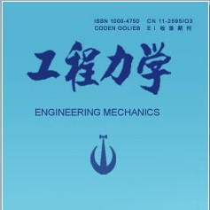

8月14日，包头，OpenSees交流研讨会
以下文章来源于工程力学 ，作者工程力学编辑部

《工程力学》的官方微信，用于发布《工程力学》期刊的相关消息，是一个专业的学术推广平台。
“第25届全国结构工程学术会议”将于2016年8月12~8月14日在内蒙古包头市举办。会议闭幕式后将组织“OpenSees程序交流研讨会”。研讨会旨在交流探讨在OpenSees计算平台的研发、应用与发展前景等方面的科研成果、所遇到问题、使用经验与宝贵建议。本研讨会免费。
本次研讨会安排学术报告和自由讨论，具体报告如下：
报告人：（按姓氏排序）
4:30~4:40 OpenSees 在高层建筑结构消能减震中的应用—龚顺明（同济大学周颖教授团队）
4:40~4:50 OpenSees在钢框架-摇摆桁架结构抗震分析中的应用—贾明明副教授（哈尔滨工业大学吕大刚教授团队）
4:50~5:00 OpenSees 在框架填充墙结构连续倒塌分析中的应用—李爽副教授（哈尔滨工业大学瞿长海教授团队）
5:00~5:10 考虑土-结构相互作用的高层结构地震动力分析—卢佳盛（厦门大学古泉教授团队）
5:10~5:20 超高层弹塑性动力时程分析程序的开发与初步验证—任智楠（大连理工大学何政教授 团队）
5:20~5:30 OpenSees 开发及其在超高层结构中的应用—解琳琳讲师（北京建筑大学和清华大学）
5:30~5:40 考虑粘结滑移模型更新的混合实验方法—杨浩文（哈尔滨工业大学吴斌教授团队）
5:40~5:50 数值子结构方法及在高层结构弹塑性分析中的应用—张沛洲、孙宝印（大连理工大学欧进萍院士团队）
5:50~6:10 自由讨论
OpenSees程序交流研讨会(第一轮通知)
OpenSees的全称是Open System for Earthquake Engineering Simulation （地震工程模拟的开放体系）。它是由美国国家自然科学基金（NSF）资助、西部大学联盟“太平洋地震工程研究中心”（Pacific Earthquake Engineering Research Center，简称PEER）主导、加州大学伯克利分校为主研发而成的、用于结构和岩土方面地震反应模拟的一个开源软件。近年来国内高校学者在OpenSees的开发和应用方面也做了较多的工作。本次会议将为相关研究人员搭建一个互相交流的平台
感谢会议主办方内蒙古科技大学和中国力学学会结构工程专业委员会为本次交流会提供免费场地等便利条件。